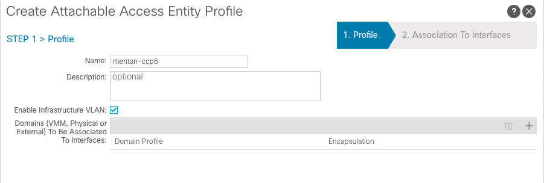
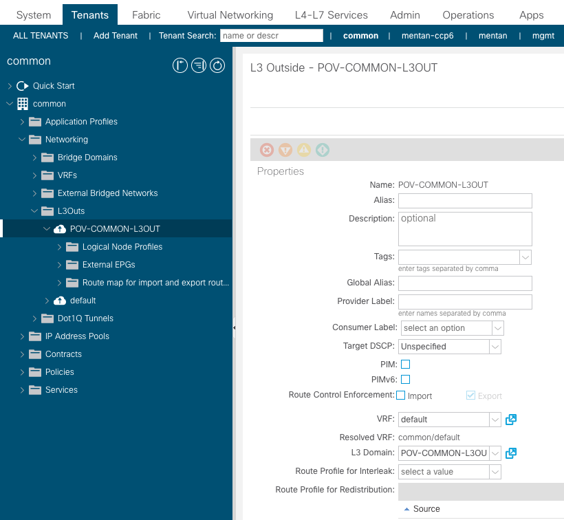
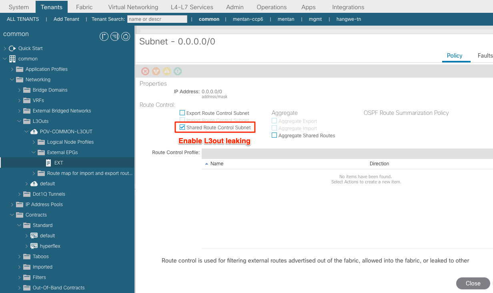

CC安装前准备
地址/VLAN
NTP: 10.66.141.50, 10.66.141.51
DNS: 64.104.123.245
CCP management IP: 172.16.100.1/24 (routable CIDR)
CIDR For Controller Kubernetes Pod network(Installer): 10.50.0.0/16
subnet for Pods(ACI-CNI): 10.51.0.1/16
subnet for service(ACI-CNI): 10.52.0.1/16
node vlan start ID: 550 (HX FI trunk allow)
node vlan end ID: 560 (HX FI trunk allow)
DHCP Server
使用ASAv提供DHCP功能，ASAv配置如下：
interface GigabitEthernet0/0
nameif inside
security-level 100
ip address 10.75.53.172 255.255.255.0
dhcpd option 3 ip 10.75.53.1
!
dhcpd address 10.75.53.71-10.75.53.72 inside
dhcpd enable inside
ACI环境
-
CCP installer VM 设置中使用的AAEP/Tenant/VRF参数
AAEP: mentan-ccp6  Tenant: mentan-CCP6
VRF: common/default
-
配置L3out in common tenant用于访问Internet，下载相关文件
按照标准方法在common tenant中配置L3out（过程省略）  在L3out subnet，开启leaking 